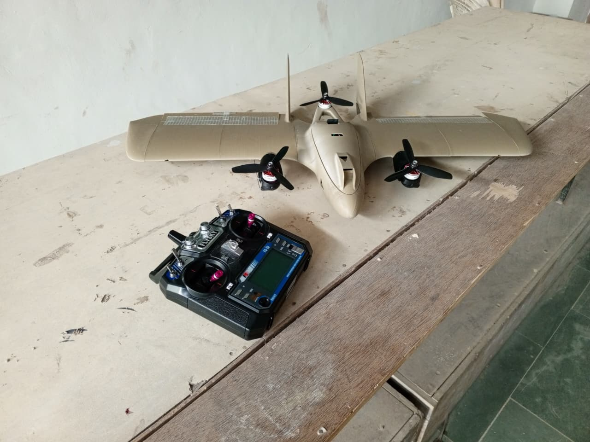
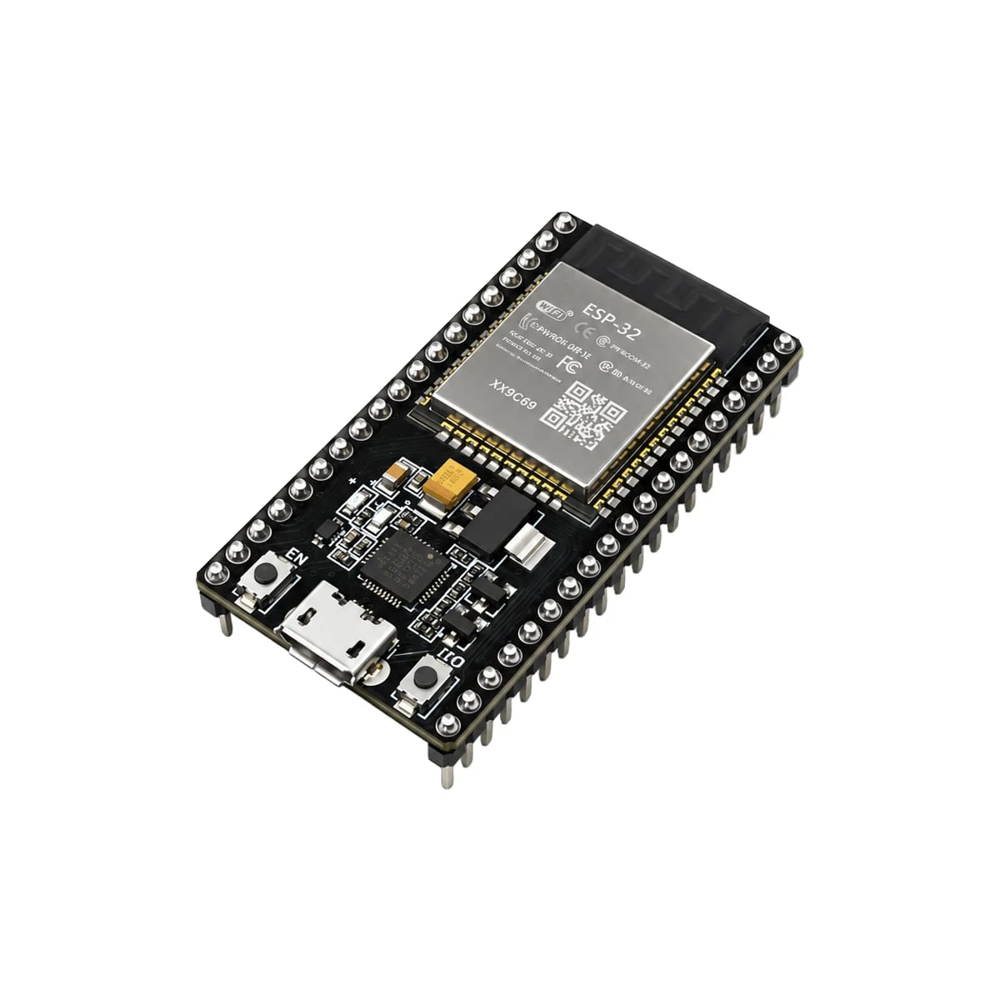
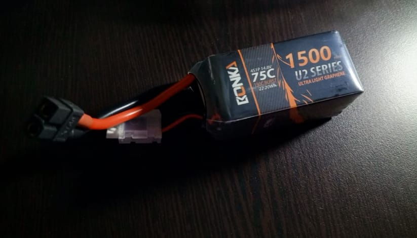
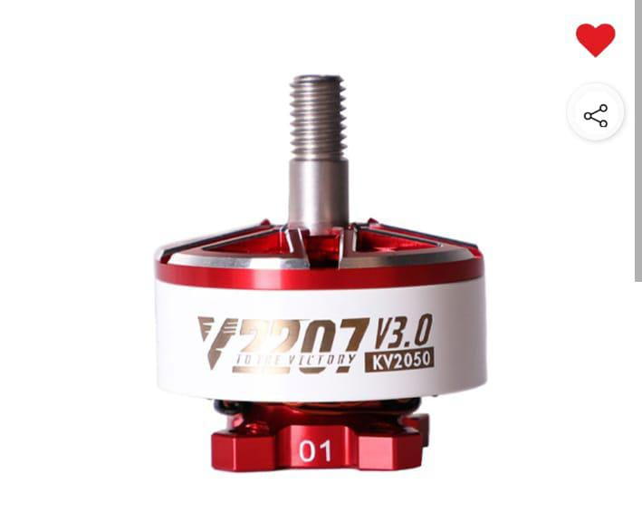
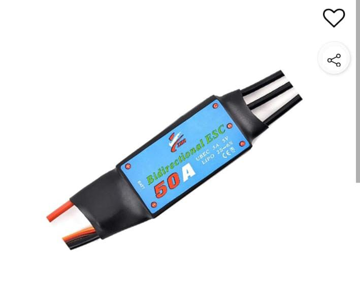
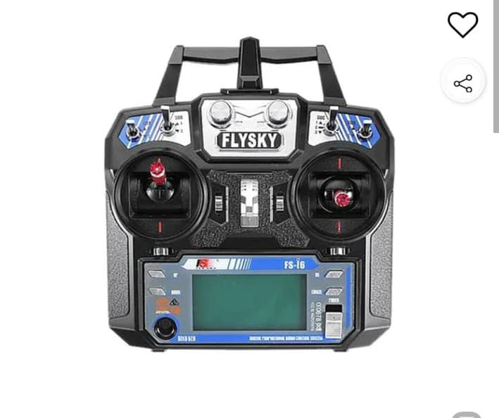
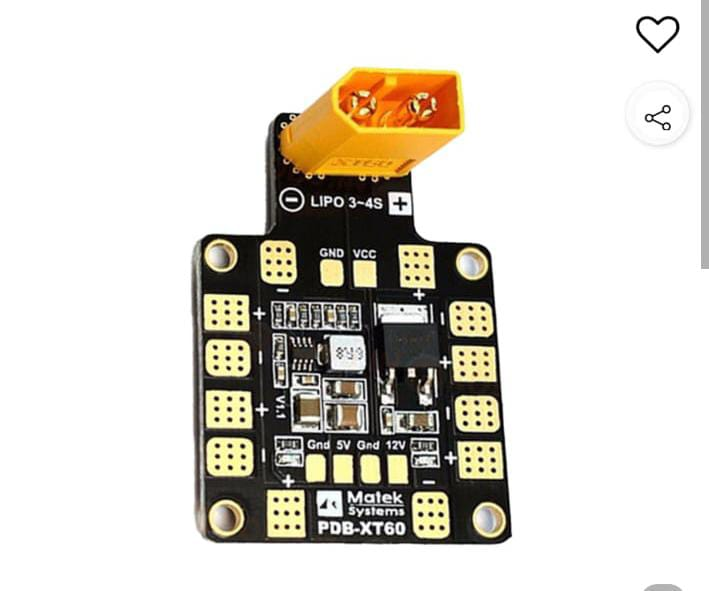
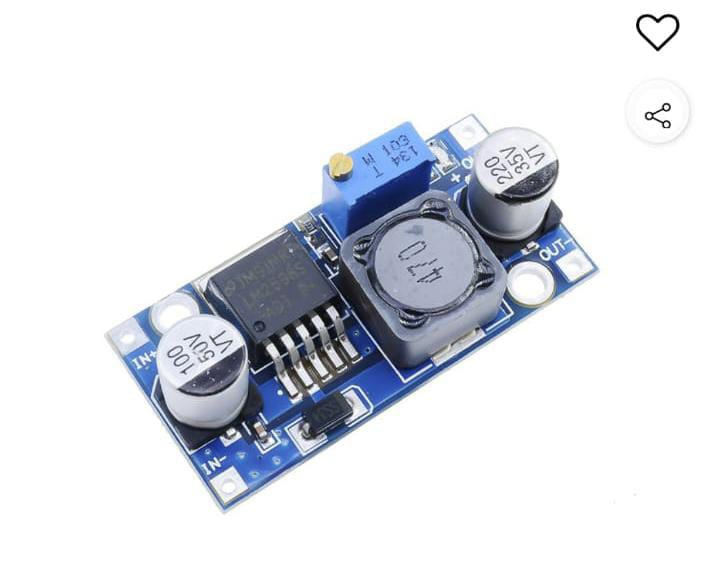
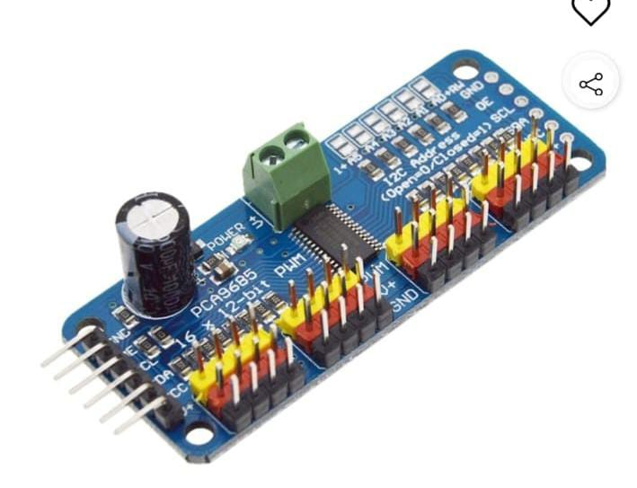
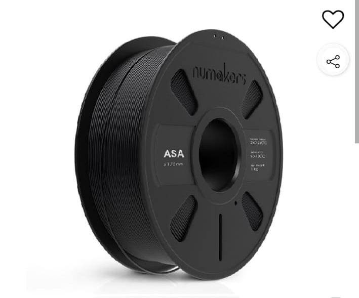

Vertical Lift
Multiple motor systems provide the vertical thrust required for take-off and landing.
HOVER / LIFTBEYOND THE HORIZON
One aircraft. Two flight modes.
Engineering the transition between vertical lift
and forward flight.

VERTICAL TAKE-OFF / FIXED-WING FLIGHTNIGHTHAWK VTOL combines the vertical-lift capability of a multirotor with the forward-flight efficiency of a fixed-wing aircraft.
Multiple motor systems provide the vertical thrust required for take-off and landing.
HOVER / LIFTThe fixed-wing airframe is designed to generate aerodynamic lift during forward flight.
CRUISE / GLIDEElectronic control, radio inputs and servo mechanisms form the aircraft's control system.
ELECTRONICS / CONTROLA closer look at the electronics, propulsion, control and fabrication materials used in our prototype.

The main microcontroller used to process control inputs, communicate with peripherals and execute the aircraft's control logic.

The 14.8 V, 1500 mAh, 4S lithium-polymer battery supplies electrical energy to the aircraft's propulsion and power systems.

Brushless motors convert electrical energy into rotational motion to produce thrust. Three motors form the prototype's propulsion arrangement.

The electronic speed controller regulates motor operation in response to control signals. Compatibility with the motor and battery must be verified.

The radio transmitter allows the pilot to send commands to the compatible receiver for manual control and testing.

The servo converts electrical control signals into angular movement. It can actuate the aircraft's tilt mechanism or control surfaces, depending on installation.

The PDB distributes battery power to compatible electrical subsystems through designated connections and power rails.

A buck converter reduces a higher DC input voltage to a lower regulated voltage for compatible electronics.

The PCA9685 provides multiple PWM output channels over an I²C interface, helping coordinate servo control signals.
The MPU6050 combines a three-axis accelerometer and a three-axis gyroscope. It provides motion measurements that can support attitude estimation and stabilization.

Acrylonitrile Styrene Acrylate is a 3D-printing thermoplastic valued for its weather resistance and useful mechanical properties when printed correctly.
Actual flight performance depends on component compatibility, airframe mass, centre of gravity, control tuning and systematic ground testing.
Our airframe fabrication process transforms digital geometry into lightweight, custom-shaped aircraft components.
The airframe components were prepared as digital models and manufactured using fused deposition modelling (FDM).
We selected ASA filament for its useful weather resistance. Print orientation, wall thickness, infill and part geometry all influence the final strength and mass.
Prepare the aircraft geometry and divide it into printable components.
Configure layer height, walls, infill, supports and print orientation.
Build the components layer by layer using ASA filament and suitable printer settings.
Assemble the printed airframe and integrate the propulsion, electronics and control mechanisms.
From design decisions and material selection to assembly, electronics integration and testing.
Establish the airframe layout, propulsion arrangement and component requirements.
Produce the airframe components using 3D printing and assemble the aircraft structure.
Connect the electronic subsystems and develop the embedded control software.
Verify individual subsystems, troubleshoot issues and progressively evaluate the system.
NIGHTHAWK VTOL is the result of collaboration, experimentation and shared engineering effort.
Every great flight begins with an idea.
This is only the beginning.